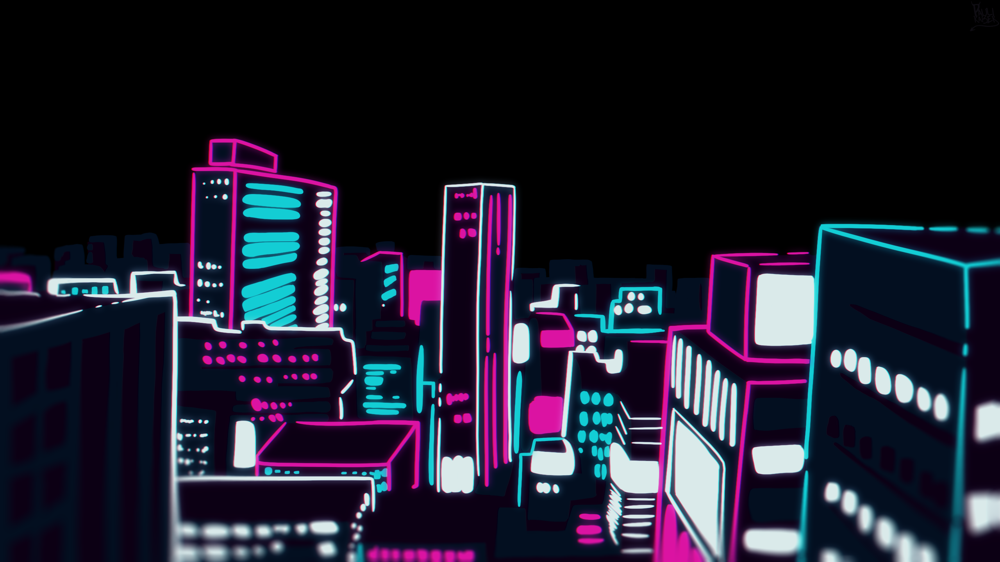

Data Science
Sentiment analysis, natural language processing and web-scraped data visualizations — all built with Python.

Builder of small experiments in data science, cryptography and the web — because, as the saying goes, “Manners maketh the man.”
Two curated sets of coursework and personal experiments, each with walkthrough videos and write-ups.
Word clouds and polarity charts from scraped travel data, powered by Python & Beautiful Soup.
Watch walkthrough
Protecting files from unauthorized access using Pycryptodome, with a full code demo.
Watch walkthroughA classic cipher with my own twist — a reversed method applied to every shifted output.
Watch walkthroughI'm a BS Information Technology student at Jose Maria College who loves reading, programming, photography and learning something new every day.